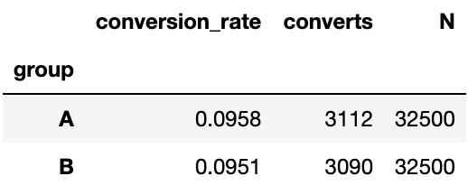
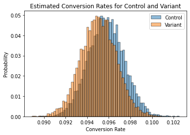
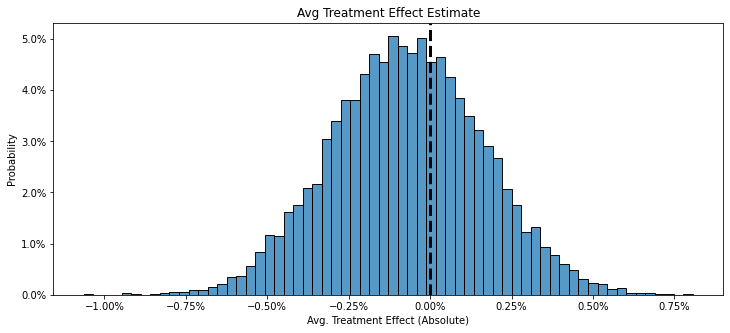
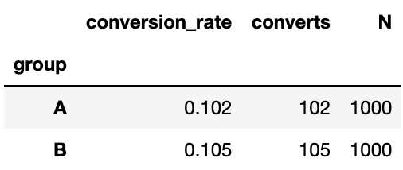
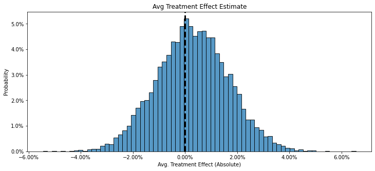
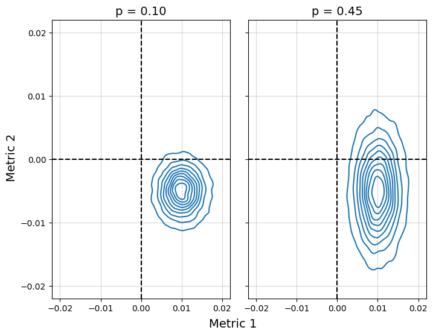
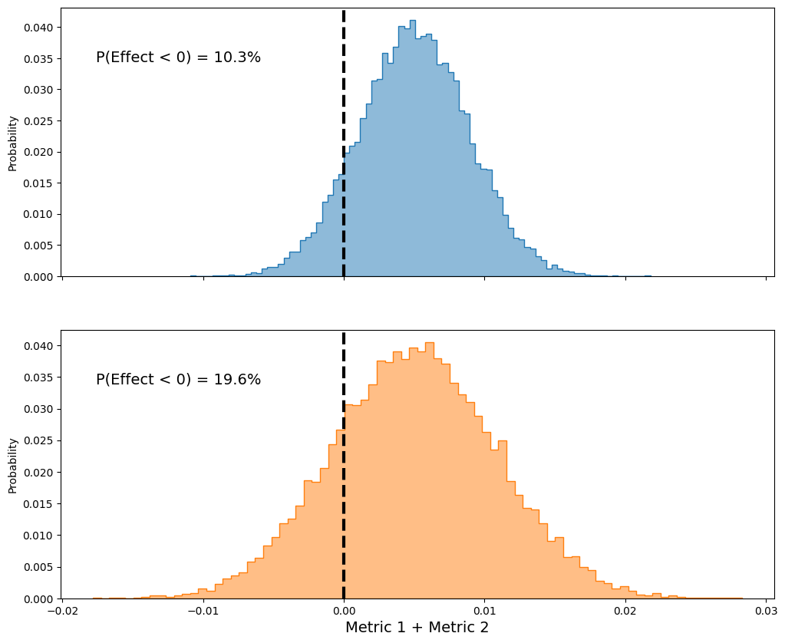

Uncertainty Intervals are better than p-values. Sure, its better to use both, but p-values are just a point estimate and they bring no concept of uncertainty in our estimate - this can lead to situations where we expose ourselves to high downside risk.
Take the following example for instance. Let’s say we’re running a “Do no harm” A/B test where we want to roll out an experiment as long as it doesnt harm conversion rate.
If you want to follow along with the code, see here.
The experiment design
Given the stakeholders want to rule out a drop in conversion, and ruling out small differences requires large sample sizes, we decide to design an experiment with good power to detect the presence of a 1/2% absolute drop (if one were to truly exist)
We ran a power analysis and found that in order to have a 90% probability of detecting (power=0.9) a 1/2% absolute drop in conversion rate with 80 percent confidence ( 𝛼=0.2 ), we need N=32500 per group
Statisticians might not love this interpretation of a power analysis, but its a useful and interpretable translation and tends to coincide with what we’re aiming for anyway. In reality, frequentist power analyses assume that the null hypothesis is correct, which isn’t quite what we want, not to mention, frequentist power analyses use backwards probabilities which are just plain confusing - see here to for more
Note that we’re prioritizing power here for a reason. If 𝛼 is false positive rate, and power is probability of detection, then don’t we want to prioritize our probability of detecting a drop if one truly exists? A false negative here would be more expensive then a false positive
pA = 0.1 # historical conversion rate
abs_delta = 0.005 # minimum detectable effect to test for
# Statsmodels requires an effect size
# (aka an effect normalized by its standard deviation)
stdev = np.sqrt( pA*(1-pA) ) # bernoulli stdev, sigma = sqrt(p(1-p))
ES = abs_delta / stdev
# estimate required sample size
sm.stats.tt_ind_solve_power(
-ES,
alpha=0.2,
power=0.9,
alternative="smaller"
)Running the code above leads us to conclude are sample size should be roughly 32,500 users per group.
The experiment
I’m going to simulate fake data for this experiment where * The control has a true conversion rate of 10% * the variant has a true conversion rate of 9.25%
For examples sake we’ll pretend we don’t know that the variant is worse
Click here for code
# Settings
np.random.seed(1325)
N = 32500
pA = 0.1
pB = 0.0925
# Simulation
def simulate_experiment(pA, pB, N_per_group):
df = pd.DataFrame({
"group":["A"]*N + ["B"]*N,
"convert":np.r_[
np.random.binomial(1, p=pA, size=N),
np.random.binomial(1, p=pB, size=N)
]
})
return df
df = simulate_experiment(pA, pB, N)
Looking at the data above, we’re seeing a better conversion rate in group B. We run a two-proportions z-test and we find that there’s a non-significant p-value, meaning we found insufficient evidence of the variant having lower conversion than the control.
def pval_from_summary(tab):
_, pval = sm.stats.proportions_ztest(
count=tab["converts"][::-1],
nobs=tab["N"][::-1],
alternative="smaller"
)
return pval
(df.pipe(summarize_experiment)
.pipe(pval_from_summary))\[ p = 0.38 \]
We recommend to our stakeholders to roll out the variant since it “does no harm”
There are some serious red flags here
- First of all, p-values are all about the null hypothesis. So just because we don’t find a significant drop in conversion rate, that doesnt mean one doesnt exist. It just means we didnt find evidence for it in this test
- There was no visualization of the uncertainty in the result
Understanding Uncertainty with the Beta Distribution
For binary outcomes, the beta distribution is highly effective for understanding uncertainty.
It has 2 parameters * alpha, the number of successes * beta, the number of failures
It’s output is easy to interpret: Its a distribution of plausible probabilities that lead to the outcome.
So we can simply count our successes and failures from out observed data, plug it into a beta distribution to simulate outcomes, and visualize it as a density plot to understand uncertainty

It’s also easy to work with - if we want to understand the plausible differences between groups, we can just take the differences in our estimates
\[ \delta = \hat{p_B} - \hat{p_A} \]

With visualization, we get a very different picture than our non-significant p-value. We see that there’s plenty of plausibility that the control could be worse.
We can further calculate the probability of a drop, \(P(B < A)\), and find that theres a greater than 60% probability that the variant is worse than the control
# P(B < A)
(pB_hat < pA_hat).mean()\[ P(B < A) = 0.62 \]
Remember when we designed the experiment? Considering our main goal was to do no harm, we might not feel so confident in that now, and rightly so, we know the variants worse since we simulated it.
Unless we feel very confident in our choice of testing for a 1/2% drop and know that we can afford anything up to that, then we we really shouldnt roll out this variant without further evaluation
This is particularly important with higher uncertainty As we can see in the example below, where the observed conversion rate is better in the variant, but the downside risk is as high as a 4% drop in conversion rate

\[ p = 0.59 \]

Another Example: Which Metric?
This is a fun problem from @seanjtaylor > “You run a product test and measure a strong positive effect on your first metric.
Metric 1: +1% (p<.01)
You also see a negative, but not significant result on equally important Metric 2. You only care about these two metrics. Which of these estimates would you prefer to ship?”
- Metric 2: -0.5% (p = 0.10)
- Metric 2: -0.5% (p=0.45)
- Neither is shippable
Try to think it through on your own first, then scroll down for the answer
If you chose option 2, you weren’t alone. Option 1 makes it seem like there’s a more likely negative effect due to the lower p-value, so thats worse, right?
Not quite. Check out the uncertainties. The downside risk option 2 is much worse than option 1.

We can take this one step further and add our effects to compare (remember we assumed the metrics are equally important), and see if it’s overall net positive

As shown above, the non significant p value option has a higher probability of being negative, AND it gives more plausibility to more negative possible effects
Summary
Always report uncertainty intervals - p-values definitely dont tell the whole story, even with well designed experiments. As we saw, ignoring uncertainty can expose ourselves to high downside, especially when our choice in experiment design has even the slightest bit of arbitrary choices involved (such as an arbitrary minimum detectable effecs)
Reporting uncertainty intervals or beta distributions (or even bootstrapping) can be a great way to avoid falling for this mistake